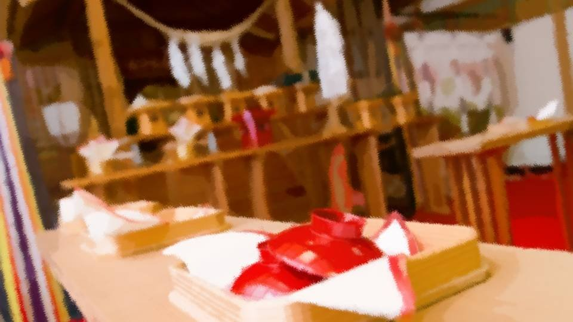
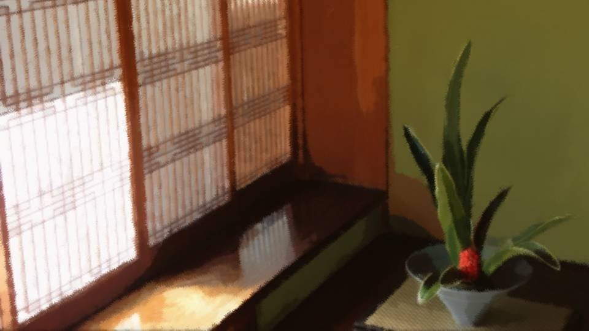
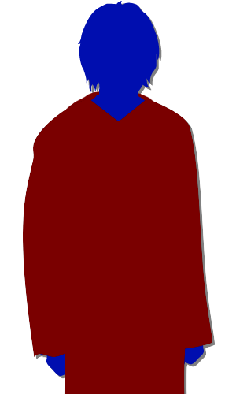
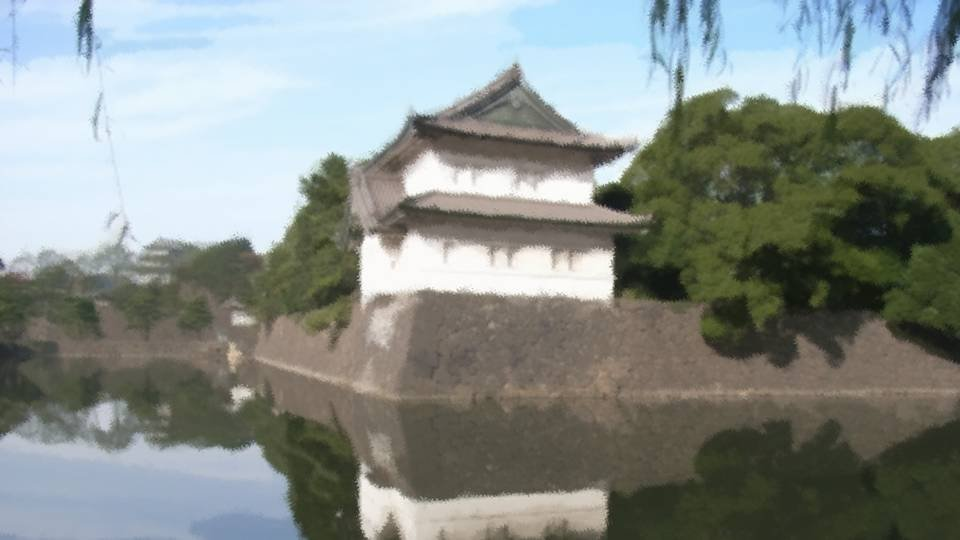

Script 0000217A

―I came down Mount Itohime and set off for home alone.
With this, I too am a full member.
Those who marry into the Arata settlement shut themselves away on Mount Itohime for a year.
Yes, a whole year has already passed since I came here.
With this, I too am a full member.
Those who marry into the Arata settlement shut themselves away on Mount Itohime for a year.
Yes, a whole year has already passed since I came here.
―That day, a year ago.

My husband beside me kept the Noh mask on the whole time during the ceremony.
But the first words we exchanged― it was Ko-sama's voice.
After that my mind went blank, and I could not remember afterward how the ceremony went on.
Eventually the ceremony ended―
But the first words we exchanged― it was Ko-sama's voice.
After that my mind went blank, and I could not remember afterward how the ceremony went on.
Eventually the ceremony ended―


"Ko-sama!"
Having withdrawn to the back, I shouted to Ko-sama, who was in the back as well.
"So it is you, Kikyo-dono!"
Ko-sama took off the Noh mask and showed me his face for the first time.
And then Father came over―
Having withdrawn to the back, I shouted to Ko-sama, who was in the back as well.
"So it is you, Kikyo-dono!"
Ko-sama took off the Noh mask and showed me his face for the first time.
And then Father came over―
"Father...!"
"Kikyo, about this..."
"Kikyo, about this..."
It was that day, the day Ko-sama first came to Tokyo.

At the castle he had an audience with the Emperor and presented the tribute.
At that time, I was told, Ko-sama made a request of the Emperor.
By its nature, the Arata settlement had very few brides coming from outside.
It was short of women at that very time, and he asked whether a woman who would come to Arata could somehow be found.
At that time, I was told, Ko-sama made a request of the Emperor.
By its nature, the Arata settlement had very few brides coming from outside.
It was short of women at that very time, and he asked whether a woman who would come to Arata could somehow be found.
The woman the Arata settlement wanted was one of deep learning and careful thought.
Womanliness and the like came second, since that could be taught in the settlement as much as was needed.
He asked to be introduced to a woman who could marry a man of the settlement.
Womanliness and the like came second, since that could be taught in the settlement as much as was needed.
He asked to be introduced to a woman who could marry a man of the settlement.
The Emperor went no further than saying, "I will think on it," but later a suitable woman was found.
That woman, in short, was me.
I had been named, I was told, as a woman fairly well known as a clever woman and also of an age suited to marriage.
The Emperor's order had been passed to Father, and that was when he told me about the marriage.
That woman, in short, was me.
I had been named, I was told, as a woman fairly well known as a clever woman and also of an age suited to marriage.
The Emperor's order had been passed to Father, and that was when he told me about the marriage.
Then Ko-sama was summoned by the Emperor and came to Tokyo again.
Ko-sama had heard of it before coming to Tokyo, and
Shouldn't the one you marry be someone you choose freely?
Don't the people concerned have any right to choose?
he had argued back.
Ko-sama had heard of it before coming to Tokyo, and
Shouldn't the one you marry be someone you choose freely?
Don't the people concerned have any right to choose?
he had argued back.
But that was the norm in this age and this place.
Since it was the Emperor, Ko-sama had no choice but to obey his order.
That was why, by the river, Ko-sama said he understood how I felt.
The two of us, each bound to marry a stranger.
Looking back on it now, how comical it was.
Since it was the Emperor, Ko-sama had no choice but to obey his order.
That was why, by the river, Ko-sama said he understood how I felt.
The two of us, each bound to marry a stranger.
Looking back on it now, how comical it was.
When the Emperor sounded Father out about my marriage, Father had asked about my husband in great detail, I was told.
The more he heard about the husband and about the Arata settlement, the more he thought they might be close to the ideal I was looking for.
Father had called him "a match worthy of me," and that was because I was interested in Western culture and the new age.
Father, in his own way, had truly chosen a match worthy of me.
The more he heard about the husband and about the Arata settlement, the more he thought they might be close to the ideal I was looking for.
Father had called him "a match worthy of me," and that was because I was interested in Western culture and the new age.
Father, in his own way, had truly chosen a match worthy of me.
Father had been told who the man was, but he had been ordered not to let me know who he was.
Because if I were to marry a stranger living in a remote region, I might run away.
If I ran away, it would bring shame on the Emperor.
Because if I were to marry a stranger living in a remote region, I might run away.
If I ran away, it would bring shame on the Emperor.
That was why Father had said nothing to the very end.
But no one knew that Ko-sama and I had already met.
That was why things had turned out so comical and strange.
But no one knew that Ko-sama and I had already met.
That was why things had turned out so comical and strange.


"I'm home, Ko-san."
"Kikyo! You're safe!"
"Yes, I'm one of Arata's people now, aren't I?"
"Yeah! You really, really did well!"
"Kikyo! You're safe!"
"Yes, I'm one of Arata's people now, aren't I?"
"Yeah! You really, really did well!"
"But..."
"Hm?"
"There was nothing on Mount Itohime, so... I was reeeeeeally free!"
"............ Hahahaha! I see, you were free!"
Now that the mountain seclusion is over, I can at last be with Ko-san officially.
From now on, I will be with Ko-san forever and ever.
"Hm?"
"There was nothing on Mount Itohime, so... I was reeeeeeally free!"
"............ Hahahaha! I see, you were free!"
Now that the mountain seclusion is over, I can at last be with Ko-san officially.
From now on, I will be with Ko-san forever and ever.